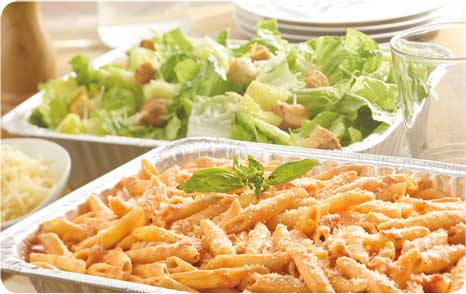

La vita è come la ricetta per una torta. Se segui i soliti ingredienti farai la torta ma già saprai che gusto avrà, gli altri la assaggeranno, apprezzeranno ma dimenticheranno presto. Ci vuole sempre un pizzico di genialità in ogni ricetta per far si che essa non muoia con l’ultimo assaggio.
In questo sito si potranno visionare ricette gustose e tipiche della tradizione culinaria romana, dai primi piatti fino ai dessert ,dai più conosciuti a quelli più particolari,ricette revisionate e presentate da sapori di roma, azienda leader nel settore della ristorazione della capitale, che vanta numerosi anni di esperienza lavorativa, professionalità e disponibilità nel soddisfare ogni tipo di richiesta o servizio del settore.
 sapori di roma dal 2005 organizza eventi di ogni tipo sia per ambienti aziendali sia per ambienti familiari. Abbiamo una grande cura negli allestimenti ed un'ampia scelta di location per ogni tipo occasione.
Contatti:
Di seguito sono illustrate le ricette principali della tradizione culinaria romana da noi realizzate: